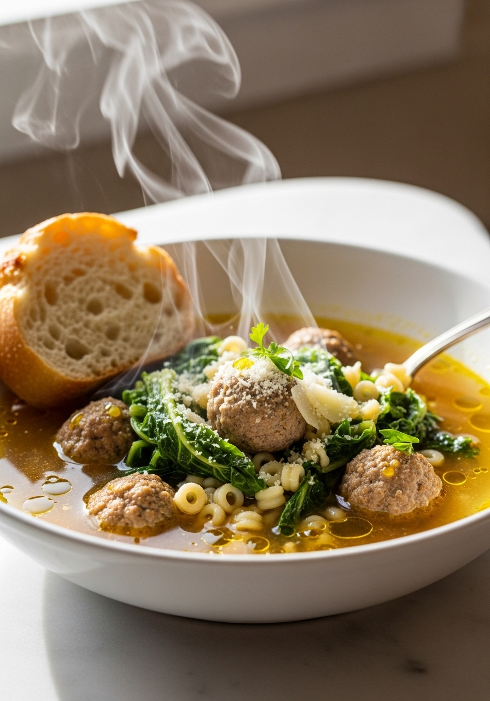
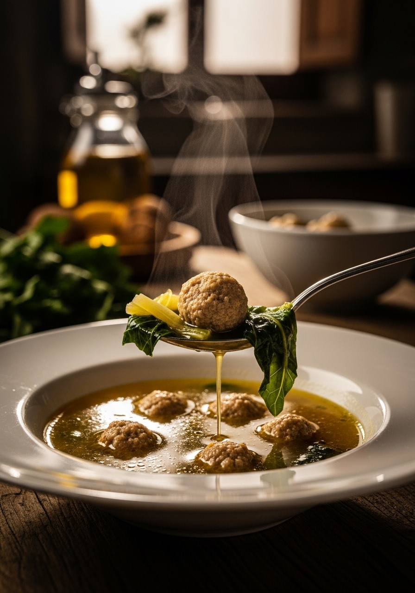

La minestra maritata non ha niente a che fare con i matrimoni. 'Minestra maritata' significa 'zuppa sposata' — un riferimento al perfetto connubio tra carne e verdure in un brodo ricco e caldo. Questa versione dal gusto unico con piccole polpettine fatte in casa è il tipo di ricetta che sfama tutta la famiglia e ha un sapore ancora migliore il giorno dopo.

Comfort FoodUno dei miti alimentari più persistenti è che la minestra maritata venga servita ai matrimoni. Non è così. Il nome viene dal piatto napoletano 'minestra maritata' — letteralmente 'zuppa sposata' — che si riferisce all'armonioso connubio tra carne e verdure in un brodo ricco. La versione italo-americana ha evoluto questo classico nella zuppa di polpettine e verdure che conosciamo oggi. A Napoli, l'originale include una gamma molto più ampia di carni e verdure, cotte lentamente in un brodo dal sapore profondo.
La scarola (una verdura a foglia leggermente amara) è la scelta tradizionale — la sua leggera amarezza bilancia la ricchezza delle polpettine e del brodo. Gli spinacini sono il sostituto più comune — più delicati, più facilmente reperibili, e ugualmente deliziosi. Il cavolo riccio funziona bene per una consistenza più sostanziosa. Qualunque cosa scegli, aggiungila negli ultimi 2 minuti di cottura — appassisce rapidamente e perde il suo colore vivace se cuoce troppo.
Ingredienti
Procedimento

Conserva la zuppa senza pasta per i migliori risultati — la pasta assorbe liquido e diventa molle. Conserva in frigo fino a 4 giorni. Congela la zuppa (senza pasta) per un massimo di 3 mesi. Cuoci la pasta fresca quando riscaldi e aggiungila alla zuppa calda. Le polpettine si congelano magnificamente — fai una doppia quantità e congela metà per la prossima volta.
Gli acini di pepe (pasta a forma di piccole perle) sono tradizionali. I ditalini (tubetti piccoli), l'orzo o le stelline funzionano tutti bene. La pasta deve essere abbastanza piccola da stare in un cucchiaio con una polpettina — la pasta grande sovrasta la zuppa.
Sì, ma la qualità conta enormemente in una zuppa a base di brodo. Usa un buon brodo di pollo di qualità, a basso contenuto di sodio, e aggiungi la crosta di Parmigiano — trasformerà anche un brodo mediocre. Il brodo di pollo fatto in casa è spettacolare se ce l'hai.
Tieni le mani bagnate durante la lavorazione — le mani asciutte causano appiccicosità e deformazione. Lavora delicatamente e velocemente. Anche mettere il composto di carne in frigo per 15 minuti prima di formare le palline aiuta.
No. Il minestrone è una zuppa di verdure densa con pomodori e legumi. La minestra maritata è una zuppa a base di brodo limpido incentrata sull'interazione tra carne (polpettine) e verdure. I profili di sapore sono completamente diversi.
Sì — usa brodo vegetale, sostituisci le polpettine con tortellini piccoli o fagioli cannellini, e aggiungi verdure extra come zucchine e cavolo riccio. Aggiungi un cucchiaio di miso bianco al brodo per profondità.